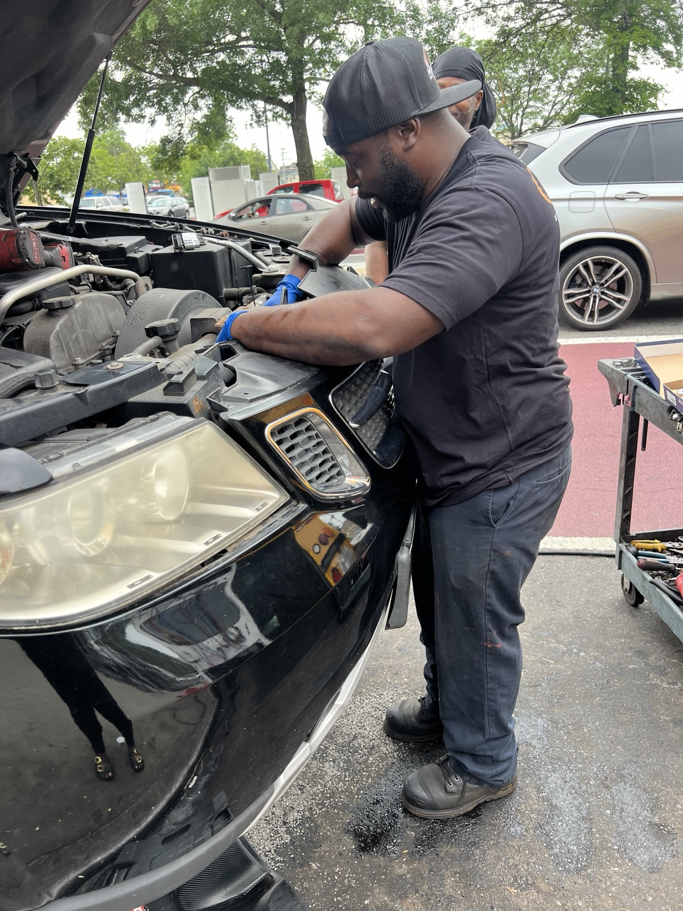
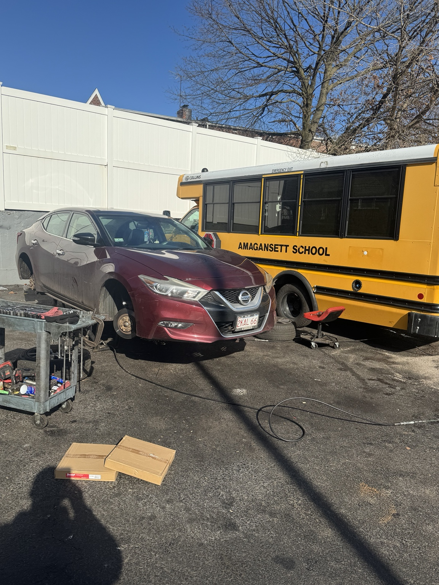
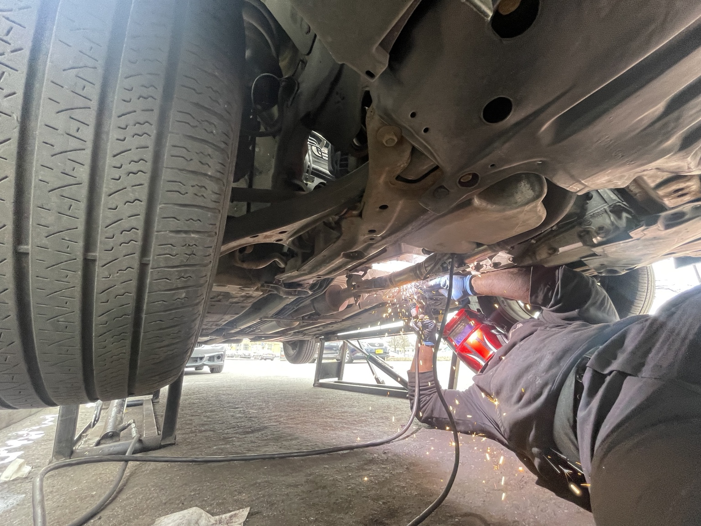
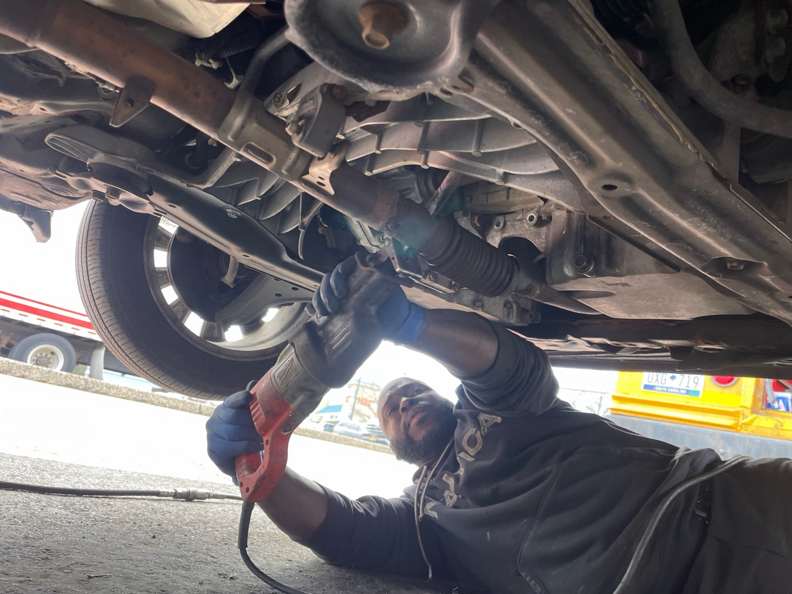
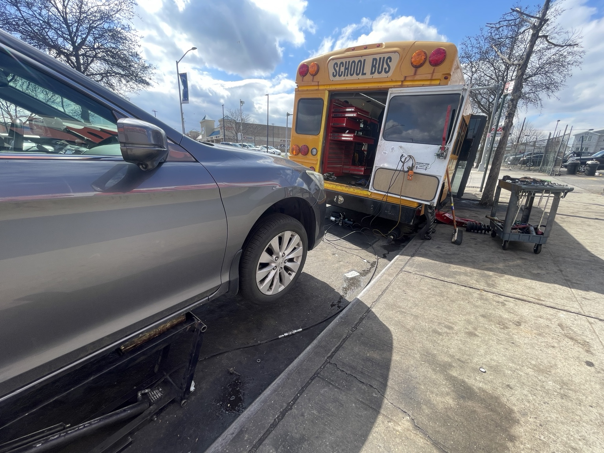

Professional Mobile Auto Repair at Your Location
Magic Touch Mobile Auto Service provides convenient automotive service throughout New York City's five boroughs, Nassau County and Suffolk County.
Mobile Auto Repair Services
Skip the tow and the waiting room. We come to your home, workplace or vehicle location for dependable automotive service.
Brake Service
Brake inspections, pads, rotors and related brake repairs.
Suspension
Diagnosis and repair of common suspension and steering concerns.
Diagnostics
Vehicle diagnostics and troubleshooting to help identify the source of the problem.
Tune-Ups
Routine maintenance and tune-up services to keep your vehicle running properly.
Cooling Systems
Cooling-system diagnosis and repair, including common overheating concerns.
General Auto Repair
Convenient on-site repairs for many common automotive problems.
Our Service Area
New York City: Brooklyn, Queens, Manhattan, The Bronx and Staten Island.
Long Island: Nassau County and Suffolk County.
Why Choose Magic Touch?
We bring professional auto repair directly to you, helping you avoid the hassle of arranging a tow or spending hours in a repair-shop waiting room.
We Come to You
Service at your home, workplace, or vehicle location throughout our coverage area.
Wide Service Area
Serving all five NYC boroughs plus Nassau and Suffolk counties.
Hands-On Service
Real automotive repair and diagnostics performed on location with professional equipment.
Easy to Reach
Call or text 347-220-5954 to discuss your vehicle or request service.
Customer Reviews
Have you used Magic Touch Mobile Auto Service? We can feature your feedback here.
Your Review Here
Send us a customer review and we’ll add the customer’s exact words to the website.
Your Review Here
This section is ready for verified feedback from customers you’ve served.
Your Review Here
Real customer comments can help visitors understand the service experience before they call.
Placeholder cards are shown until you provide actual customer reviews; no testimonials have been invented.
See Magic Touch at Work
A look at mobile repair work performed on location across our service area.





Request a Quote
Tell us what your vehicle needs and where you are located. When you submit the form, your phone will open a text message with the details ready to send to Magic Touch Mobile Auto Service.
Call or text 347-220-5954.
Call Now